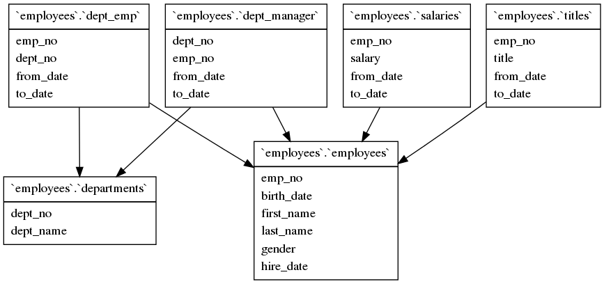

其实这还不是一个真正可用的模块，这里的名字只是预备将来发布的，所以请各位看官大家 手下留情，先不要注册掉它。
GraphViz::DBI 是一个基于 GraphViz 的模块，目标是用来进行数据库 ER 图的绘制，可以 输出的格式非常多，这里用 PNG 格式来举例。
要使用这个模块，首先要有一个可用的数据库 DBI 连接。然后要覆盖这个模块的外键参考依赖子程序，这样才能从特定数据库获取元数据。最后，还要用这个修正过的模块来输出图 片。
这里的 MySQL 数据库使用了样本数据库 employees，可以在网上下载 https://launchpad.net/test-db/employees-db-1。这里假定样本数据库已经创建并导入，并且用 DBI 登录 MySQL 的问题已经解决。
第一步，启动 Perl 调试器（perl -de 0），载入并修正 GraphViz::DBI：
DB<1> use GraphViz::DBI; sub GraphViz::DBI::is_foreign_key { return qq(`employees`.`$_->{REFERENCED_TABLE_NAME}`) for @{$_[0]->{dbh}->selectall_arrayref(q{select REFERENCED_TABLE_NAME, REFERENCED_COLUMN_NAME from information_schema.key_column_usage where REFERENCED_COLUMN_NAME=? and COLUMN_NAME=? and TABLE_SCHEMA=? and TABLE_NAME=?}, {Slice => {}}, $_[2], $_[2], $_[1]=~m{(\w+)\W+(\w+)})} }
这里通过查询了 MySQL 的元数据 information_schema.key_column_usage，从其中查找某个表的字段是否有参考的主表，若查询结果不为空的话，就返回表名作为结果，否则返回空 。
第二步，创建数据库连接，这里要求用户能够不用密码登录，且获得了查询 information_schema 的权限：
DB<2> use DBI; $d=DBI->connect(q(DBI:mysql:database=employees), q(), q())
第三步，命名临时文件，并正式驱动模块生成图片：
DB<3> x open F, q(>), q(tmp.1sKZjd1d4L.png); print F GraphViz::DBI->new($d)->graph_tables->as_png
欢迎尝试其他数据库，效果应该还不错 :)
